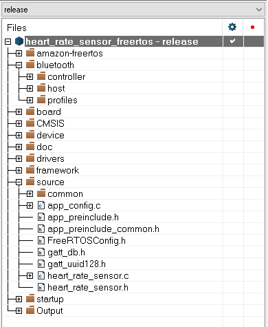

This figure shows the application folder structure:
Figure 1. Application Folder structure in workspace

The app folder follows a specific structure which is recommended for any
application developed using the Bluetooth Low Energy Host Stack:
- the common group contains the application framework shared by all profiles
and demo applications:
- Application Main Framework
- Bluetooth Low Energy Connection Manager
- Bluetooth Low Energy Stack and Task Initialization and Configuration
- GATT Database
- the source group contains code specific to the HRS
application
The bluetooth folder/group contains:
- controller/interface and host/interface – public
interfaces for the Controller and the Host; Functionality is included in the
libraries located in subfolders controller/lib and host/lib, not shown
in the IAR project structure, but added into the toolchain linker settings under the
library category.
- hci_transport contains header files and sources for the HCI transport, when
the application uses a serial interface to communicate with an external Controller.
In example demos both the Host and the Controller are located on the same chip.
- profiles contains profile-specific code; it is used by each demo application
of standard profiles.
The framework folder/group contains framework components used by the
demo applications. For additional information, see the Connectivity Framework
Reference Manual.
The freertos folder contains sources for the supported operating
system or for bare metal configuration.